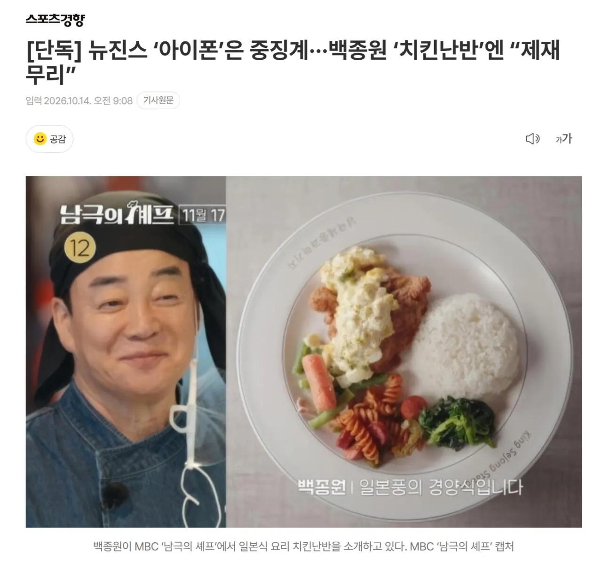
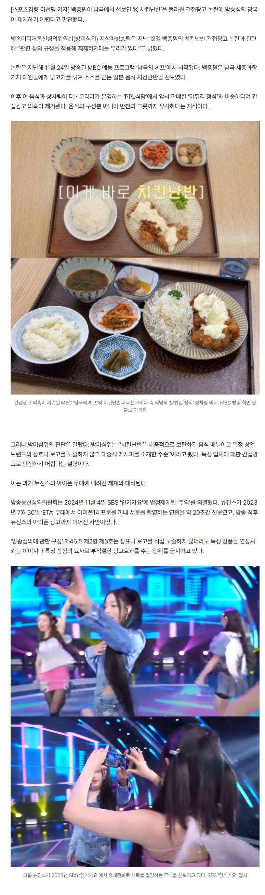

https://m.entertain.naver.com/now/article/144/0001143919

뉴진스는 그냥 대놓고 한 기업의 아이폰을 들고온거고
백종원이 가져온 치킨난반은 그냥 한 음식메뉴고 딱히 특정 상호를 언급한것도 아니고
자기의 PPL식당 메뉴와 비슷하다고 해서 이걸 규제하면 이연복쉐프도 방송에서 동파육 못 함
전혀 상관없는 이 두개를 왜 갖다붙임?

https://m.entertain.naver.com/now/article/144/0001143919

뉴진스는 그냥 대놓고 한 기업의 아이폰을 들고온거고
백종원이 가져온 치킨난반은 그냥 한 음식메뉴고 딱히 특정 상호를 언급한것도 아니고
자기의 PPL식당 메뉴와 비슷하다고 해서 이걸 규제하면 이연복쉐프도 방송에서 동파육 못 함
전혀 상관없는 이 두개를 왜 갖다붙임?
ㅈ나 광고이긴한데 PPL은 또 되는건 논리 잘 이해가 안됨. PPL이 너무 많고 억지 홍보하는거에 익숙해서 과한 광고의 기준이 뭔지 모름.
자기 방송에 따온 광고 붙인 거랑
남의 방송에 출연해서 홍보 돌린 건 다르지
규정이라는게 있음 애초에 PPL도 그 규정에 맞춰서 노출정도와 강도가 결정되는거고.
저건 뒷광고를 하지 말라는거지 PPL을 하지 말라는게 아님.
일단 ppl은 간접광고를 포함한다고 사전에 고지가 되어있고, 방송 흐름에 자연스럽게 녹아 있어야 한다는데
아이폰은 음악방송에서 공식적으로 광고를 받은게 아니고, 공연 흐름과 아이폰 촬영 퍼포먼스가 자연스럽지 않다고 판단한게 아닐까?
저거 뉴진스가 애플이 협찬줘서 저렇게 한거야? 아니면 그냥 지들이 생각없이 저렇게 한거야? 애플이 진짜 협찬준거면 저렇게 심의규정도 모르고 하지는 않았을거 같은데;; 한창 애플 CF찍을때 뽕차서 스스로 한건가..
저때 아이폰 광고 모델이 뉴진스였을껄
뮤직비디오도 아이폰으로 찍고 그랬고
협찬 노출 규정이 있을텐데 그런거 노출하려고 공항패션 같은게 생기는거지. 근데 노출을 자컨에서 해야지 왜 남컨에서 하냐고 ㅋㅋㅋㅋㅋ
애플 사마! 충성충성 하는 마음으로~
엄..
ppl로 방송국이 먹어야할 돈을 직접적으로 연예인이 먹는 구조를 바꿔버리는건데 그냥 놔둘리가 없지
뉴진스빼고 뺵-치킨난반 만 보면 논리는 틀리진않네 슈벌
뉴진스는 음악 프로 에서 뜬금 없이 폰을 들고 하니깐 ...
방송에서 상표나 상호명 언급 안되는게 아직도 잘 이해안됨
옷에 있는 로고는 테이프로 가리고 나오고 너튜브 인별 이러고 도대체 왜 그러냐 다른나라에서도 이러나
다른 나라에서도 그러는지는 모르겠지만, 방송에 상표나 상호명이 노출되면 그게 곧 광고인데, 광고로 돈버는 곳에서 광고를 공짜로 안해주는건 당연한거지.
방송사 입장에서 돈 안받으면 광고 안해주겠다 정도면 그냥 나도 납득가능한데 애초에 저런 단순 제품 노출이나 상호명 언급까지 방송통신심의위원회에서 경고하고 과징금을 주는 이유 자체가 납득이 안됨 방송사에서도 그러니까 몸사리는거고. 협찬사가 따로 있는데 경쟁사 제품이 노출되는 경우면 모르겠는데 그것도 아니고 그냥 기본적으로 모든 상표 상호명을 노출시키지 않는 게 방송문화의 스탠다드라는 게 걍 기괴함...군대식 해결방식같은 행정 코미디같음 걍
사후규제 하려면 번 돈 보다 때려맞을 과징금이 커야 성립이 되는건데, 지금 같은 사회시스템에서 사후규제를?
걍 ㅈ같아도 너튜브, 인별 이라고 하는게 낫다고 봄
님말대로 하면 광고주는 방송국에 광고를 주겠냐? 연예인한테 광고를 주겠냐? 방송국은 PPL못따고 적자나고 연예인은 협찬 광고 주렁주렁 달고 나올텐데 그게 더 기괴할듯ㅋㅋㅋ
쇼닥터들쳐나와서 홈쇼핑연동쳐해서 좆같은거 파는거나 쳐막으라고
둘을 엮는건 좀 억까인데...
쇼닥터 ppl 좆같으니까 그거나 처막아라
ㄹㅇ 의사면허 박탈했음 좋겠음.
그 의사부부 ㅈㄴ 시름
저게 되면 일단 요리예능은 다망했다고 봐야지
빽선생님이 다재다능하긴 하시네
그건 모르겠고
원래 하나 걸릴때까지 무한 랙카질 하는 거 몰라?
이자식 너 빽보이지